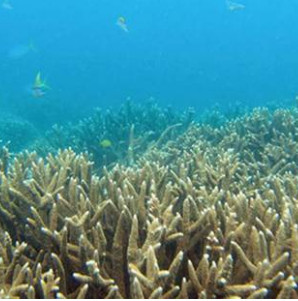
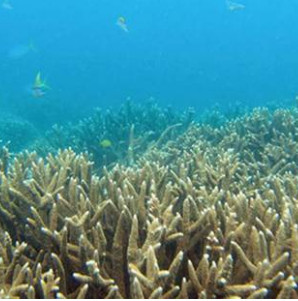

La grande barrière de corail est située au large de l’Australie. D’une superficie de plus de 300 000 km2, il s’agit du plus grand récif corallien au monde. C’est également l’un des écosystèmes les plus riches au monde.
Cependant, les coraux sont des organismes fragiles, très sensibles à la température de l’eau. Une eau trop chaude provoque un stress : les coraux expulsent alors des microalgues appelées xanthelles, qui leur permettent de faire la photosynthèse. En rejetant les xanthelles, les coraux s’affaiblissent et perdent leurs couleurs : c’est le phénomène de blanchissement.
Ce phénomène a été découvert en 1998 : depuis cette date, les coraux blanchissent petit à petit, en raison du réchauffement climatique. Le récif a également connu des épisodes de forte hausse des température, dû à des dérèglements climatiques comme El Nino (lien). Le dernier épisode a eu lieu en 2016, et a occasionné la mort de 30% des coraux du récif en seulement 9 mois. Aujourd’hui, on estime que seulement 7% des coraux sont encore intacts.